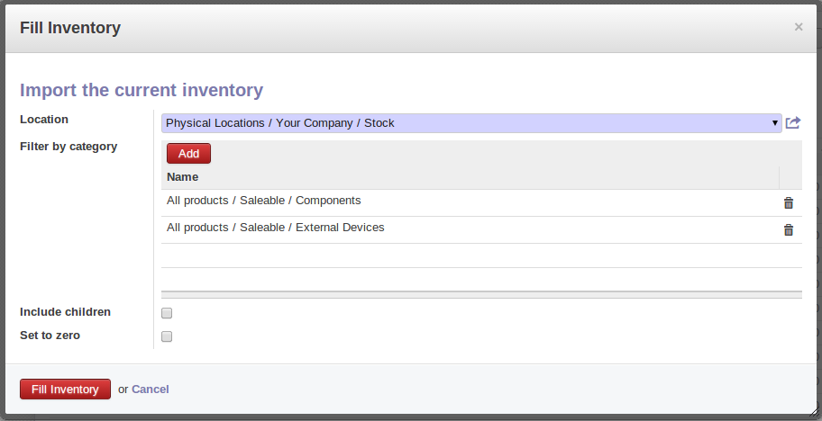

<section class="oe_container oe_website_only">
     
        <div class="oe_row oe_more_spaced">
            <h2 class="oe_slogan">stock_fill_inventory_filter Module</h2> 
            <h3 class="oe_slogan">Fill inventory with filter</h3>
            <h4 class="oe_slogan"><a href="http://www.openerp.cn">By Shine IT</a></h4>            
            <div class="oe_span6">
<p>This module will let you can filter product by category when you fill inventry.</p>
            </div>
            <div class="oe_span6">
                
            </div>
        </div>
        
    </section>
